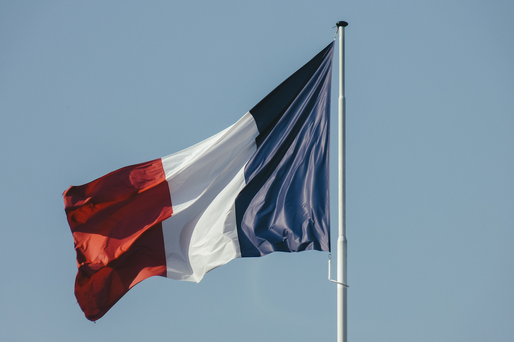

Some of The Flags Around The World
Flag of Canada
Designed by George F. G. Stanley, the flag represents the heritage and strength of the canadian people.
Flag of the United Kingdom
Otherwise known as Union Jack, dates back to the Act of Union 1801 which united the Kingdom of Great Britain & Ireland.

Flag of France
Designed by Lafayette and Jacques-Louis David, the design was adopted after the French Revolution.
Flag of Germany
The flag was first designed back in 1848, but didn't see current adoption until it was reintroduced in West Germany in 1949.